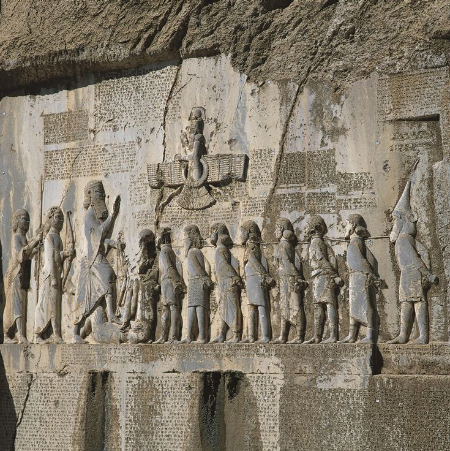
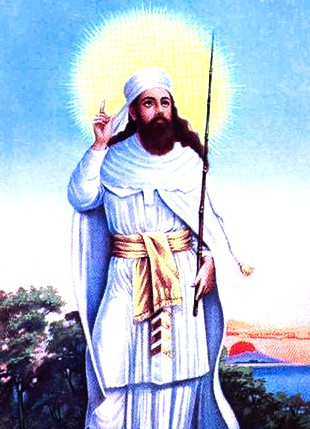
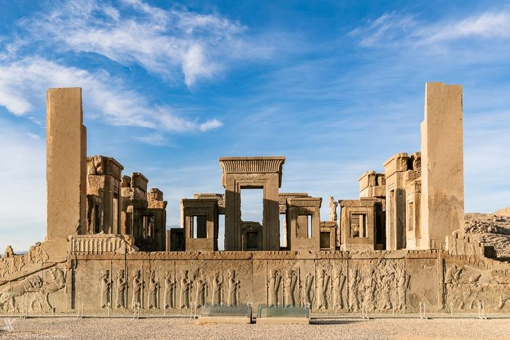

How the intellectual traditions of ancient Iran explored truth and falsehood, moral choice, wisdom, cosmic order, and humanity's responsibility for shaping the world through thought, word, and action.
Ancient Persian philosophy refers broadly to the ethical, religious, metaphysical, and intellectual traditions that developed among the Iranian peoples before the Islamic period. Although the word “philosophy” is most often associated with the Greek tradition, ancient Iran developed its own sustained reflections on truth, wisdom, moral responsibility, the nature of reality, the human soul, time, fate, and the relationship between cosmic order and human action. The most influential foundation of this intellectual world was Zoroastrian thought, associated with the prophet Zarathustra, also known in Greek tradition as Zoroaster.
The central philosophical importance of ancient Iranian thought lies in its powerful connection between knowledge and moral choice. Human beings were understood not merely as observers of the universe but as participants in a world shaped by ethical decisions. Concepts associated with truth, order, wisdom, deception, destruction, and responsibility therefore became central to Iranian intellectual life. The individual was repeatedly confronted with a fundamental question: how should one think, speak, and act in a world where moral choices have consequences?
Ancient Persian philosophy should also be understood within the broader history of the Iranian world. Iranian-speaking peoples lived across a vast cultural region extending beyond the boundaries of modern Iran. Their traditions developed through oral teaching, sacred poetry, ritual, royal institutions, legal customs, and eventually written literature. The Achaemenid, Parthian, and Sasanian empires each provided different political and intellectual environments in which Iranian ideas could develop, encounter foreign traditions, and acquire new forms.
Zoroastrian philosophy and theology provided many of the most enduring concepts of this world. Ahura Mazda represented supreme wisdom and goodness, while Asha expressed a principle associated with truth, right order, and the proper condition of reality. Against this stood forces associated with the Lie, deception, disorder, and destruction. These concepts were not simply abstract theological categories. They shaped ethical reflection by connecting the condition of the universe with the conduct and decisions of human beings.
Ancient Persian intellectual history was also a history of exchange. Iranian empires stood between the Mediterranean world, Mesopotamia, Central Asia, and India, creating opportunities for contact between different systems of learning. During the later pre-Islamic centuries, especially under the Sasanians, Iranian scholars and institutions became involved in the transmission and interpretation of scientific, philosophical, religious, and literary knowledge from several cultural traditions. Ancient Iranian thought was therefore both indigenous and connected to a much wider intellectual world.
This page traces the history of ancient Persian philosophy from early Iranian religious thought and the teachings associated with Zarathustra to the philosophical developments of the Achaemenid, Parthian, and Sasanian periods. It explores moral choice, Asha, political order, wisdom, knowledge, time, fate, the soul, and the encounter between Iranian, Greek, Indian, and later Islamic intellectual traditions. Ancient Persian philosophy ultimately represents one of the major pre-Islamic traditions of ethical and metaphysical reflection.
One broad range proposed by some modern scholarship for the life of Zarathustra, though his exact dates remain uncertain and continue to be debated.
The Achaemenid Persian Empire emerges as one of the largest and most influential political powers of the ancient world.
Achaemenid royal inscriptions express ideas concerning truth, order, kingship, and opposition to the Lie within Persian political ideology.
The Parthian period continues and develops Iranian religious, political, and intellectual traditions across a vast cultural world.
The Sasanian Empire becomes a major center of Zoroastrian learning, scholarship, translation, and intellectual exchange.
The fall of the Sasanian Empire marks the end of the ancient Persian political order and the beginning of a new era in Iranian and Islamic intellectual history.

Ancient Persian philosophy developed within a cultural world much larger than any single Persian empire. The Iranian peoples occupied and moved across regions stretching from the Iranian plateau toward Central Asia, Afghanistan, the Caucasus, and other neighboring territories. Their intellectual traditions emerged gradually through oral poetry, religious ritual, inherited myths, ethical teachings, and political institutions. To understand ancient Iranian thought, therefore, it is necessary to see Persia as part of a wider Iranian cultural and linguistic world.
Before the great Persian empires, Indo-Iranian religious traditions had already developed concepts concerning divine powers, sacrifice, cosmic order, and the relationship between human beings and the sacred world. Over time, the teachings associated with Zarathustra transformed this intellectual environment by placing exceptional emphasis on wisdom, truth, moral judgment, and individual choice. The oldest material associated with Zarathustra, especially the Gathas, remains central to attempts to understand the earliest philosophical dimensions of Zoroastrian thought.
The rise of the Achaemenid Empire brought Iranian peoples into direct political contact with Egypt, Mesopotamia, Anatolia, Greece, and parts of South and Central Asia. Founded by Cyrus the Great and expanded by later rulers, the empire governed an extraordinary diversity of languages, religions, and customs. Such political connections did not automatically produce a single shared philosophy, but they created conditions in which ideas, administrative practices, religious traditions, and systems of knowledge could encounter one another across enormous distances.
The Parthian and Sasanian periods continued this position between major civilizations. Iran remained connected with the Roman and later Byzantine worlds to the west, Central Asian societies to the northeast, India to the east, and Mesopotamian intellectual traditions within its own territories. Iranian thought therefore developed in a region where cultural isolation was impossible. Indigenous traditions continued to evolve while foreign ideas were translated, debated, adapted, rejected, or incorporated into new intellectual frameworks.
Within this long history, Zoroastrianism became one of the most important sources of Iranian ethical and metaphysical reflection. Its vocabulary connected wisdom with truth, moral action with cosmic order, and human responsibility with the wider struggle against destructive forces. Questions that modern readers might separate into religion, ethics, and philosophy were often deeply interconnected. A discussion of the soul, for example, could also involve moral judgment; a discussion of truth could also concern politics and the legitimate ordering of society.
Ancient Iranian philosophy should therefore not be reduced either to a collection of religious beliefs or to a direct equivalent of Greek philosophical schools. It was a distinct intellectual tradition with its own problems, vocabulary, and methods of transmission. Its thinkers and religious scholars asked enduring questions about what is real, what makes a life good, whether human beings possess genuine responsibility, how knowledge should guide action, and how order can survive in a world threatened by falsehood, violence, and destruction.

Zarathustra, known to the Greeks as Zoroaster, is the central figure of the ancient Iranian tradition now called Zoroastrianism. His precise historical dates remain uncertain, and scholars continue to debate when and where he lived. The oldest texts associated with his teachings are the Gathas, a group of hymns preserved within the Avesta. Whatever the exact chronology of his life, the ideas connected with Zarathustra became among the most influential contributions of ancient Iran to the history of ethics and religious philosophy.
One of the central ideas associated with Zarathustra is that human beings inhabit a morally meaningful universe. The world is not presented simply as a sequence of events over which individuals have no influence. Thinking, speaking, and acting all possess ethical significance. Human beings must exercise judgment and choose between better and worse paths. This emphasis on decision makes moral responsibility one of the defining features of Zoroastrian philosophical thought.
At the center of this vision stands Ahura Mazda, whose name is commonly understood as the Wise Lord. Wisdom is therefore not merely a human intellectual achievement but belongs to the deepest structure of reality. The pursuit of understanding has ethical consequences because correct judgment helps human beings recognize the difference between truth and deception. Knowledge, in this sense, cannot be completely separated from the question of how a person ought to live.
The concept of Asha became fundamental to this moral and metaphysical vision. Asha is difficult to translate with a single English word because it can refer to truth, rightness, proper order, and the harmonious structure of reality. Its importance lies precisely in this breadth. Truth is not treated merely as a correct statement about a fact; it is connected with the way things should properly exist and the way human beings should conduct themselves.
Zarathustra's ethical teaching also gives unusual importance to the individual. People are not simply passive objects carried by fate or controlled entirely by external powers. They participate in the moral condition of the world through their choices. This does not mean that every later Zoroastrian tradition developed an identical theory of free will, but the importance of deliberate moral choice became a lasting feature of Iranian religious and philosophical thought.
The philosophical significance of Zarathustra therefore lies not only in the origin of a major religious tradition but in the moral questions his teachings raised. What is truth? How should human beings recognize it? Are individuals responsible for the consequences of their actions? Can a person's thoughts and words contribute to the improvement or destruction of the world? These questions would continue to shape Iranian ethical reflection long after the earliest period associated with the prophet himself.
Asha is one of the most important concepts in ancient Persian philosophy because it connects metaphysics, ethics, truth, and cosmic order. In simple terms, Asha refers to the proper, truthful, and rightly ordered condition of reality. Yet the concept cannot be reduced to a single definition. It concerns both the structure of the world and the moral conduct expected from human beings, making it one of the clearest examples of how ancient Iranian thought united questions about reality with questions about how one ought to live.
Asha stands in opposition to what is often described as the Lie or destructive falsehood, represented in later Zoroastrian terminology by concepts associated with Druj. The contrast is more profound than the ordinary distinction between telling the truth and telling a lie. Falsehood can become a force of disorder that damages relationships, corrupts political authority, weakens moral judgment, and separates human action from the proper order of reality.
This ethical framework explains why Zoroastrian tradition became famous for the principle commonly summarized as good thoughts, good words, and good deeds. Thought matters because intention and judgment influence action. Speech matters because language can communicate truth or spread deception. Action matters because moral ideals must eventually become part of practical life. The three together form an ethical unity in which inner character, communication, and outward conduct are closely connected.
Ancient Iranian ethics therefore does not treat morality as something limited to private belief. Human actions participate in a wider struggle over the condition of the world. To act truthfully, responsibly, and constructively is to support a better order; to deceive, destroy, or deliberately choose harmful action is to contribute to disorder. This gives Zoroastrian ethics a strongly active character in which goodness requires participation rather than withdrawal from the world.
The political importance of truth can also be seen in Achaemenid royal inscriptions. Kings, especially Darius I, repeatedly used a vocabulary that opposed rightful order to the Lie. Such statements were part of royal ideology and cannot simply be treated as neutral philosophical theories. Nevertheless, they reveal how deeply concepts of truth, deception, legitimacy, rebellion, and proper order were connected within the political language of the ancient Persian world.
The philosophical legacy of Asha lies in its refusal to separate truth completely from life. Knowing what is true carries an ethical demand, while ethical action helps establish a more truthful and ordered world. This connection between epistemology and ethics remains one of the most distinctive features of ancient Iranian thought. The question is not merely whether a person possesses knowledge, but whether that knowledge produces wiser speech, better judgment, and constructive action.

Ancient Persian philosophy did not remain fixed in the form of its earliest traditions. Across the Parthian and especially the Sasanian periods, Iranian intellectual life developed increasingly elaborate discussions of theology, ethics, cosmology, the human soul, knowledge, fate, and the structure of reality. The surviving evidence is uneven, and many ancient texts have been lost or preserved only through later compilations. Nevertheless, the available material reveals a long tradition of reflection extending far beyond a single set of doctrines.
Wisdom occupied a central place in this intellectual world. The pursuit of knowledge was often connected with the practical problem of living well and making correct judgments. A wise person was not necessarily understood simply as someone possessing abstract information. Wisdom required the ability to distinguish beneficial from harmful action, truth from deception, and proper judgment from error. Knowledge therefore had a strongly ethical dimension within many Iranian traditions.
Questions concerning the human soul also became increasingly important. Zoroastrian traditions developed complex accounts of the soul, moral judgment, death, and the consequences of human action. These teachings connected metaphysical questions with ethics because a person's choices were understood to possess significance beyond immediate worldly consequences. Reflection on the soul therefore became inseparable from questions about responsibility, justice, memory, and the meaning of a human life.
Time and fate created another major area of philosophical reflection. If the universe possesses a meaningful order, what role remains for chance, necessity, and human freedom? Different Iranian traditions and later theological schools approached these problems in different ways. Discussions concerning destiny and time show that ancient Persian thought was not philosophically uniform. Iranian intellectual history contained competing attempts to explain how cosmic processes and human decisions could exist within the same reality.
Later Middle Persian literature preserves evidence of these broader intellectual interests. Works associated with the Zoroastrian scholarly tradition discuss cosmology, ethics, knowledge, the soul, correct action, and the relationship between wisdom and religious understanding. The Dēnkard, compiled in its surviving form after the fall of the Sasanian Empire while preserving older traditions, is particularly important for understanding the breadth of later Zoroastrian intellectual culture.
These developments demonstrate that ancient Persian philosophy existed within a changing intellectual environment. Iranian thinkers encountered ideas from Greek, Mesopotamian, Indian, and other traditions while continuing to develop their own vocabulary and problems. Ancient Persian thought was therefore neither isolated nor merely derivative. It was an indigenous tradition of ethical and metaphysical reflection that also became an important meeting point between several of the major intellectual civilizations of the ancient world.
Ancient Persian political thought repeatedly connected legitimate authority with the maintenance of order. This does not mean that the Persian Empire possessed a modern theory of democracy or individual political rights. Its political world was fundamentally monarchical. Nevertheless, royal inscriptions and political traditions reveal an important philosophical problem: what makes authority legitimate, and what happens when power becomes associated with falsehood, rebellion, or destructive disorder?
Achaemenid rulers presented kingship as connected with a larger moral and cosmic order. In the inscriptions of Darius I, the king repeatedly identifies himself as ruling with the support of Ahura Mazda. The king's role is presented as the protection and restoration of proper order against forces described as rebellious or deceitful. These texts are political documents written to justify imperial authority, but they also show how political power could be expressed through an ethical vocabulary.
The concept of the Lie became particularly important within this royal ideology. Political rebellion could be described not simply as military opposition but as a form of falsehood that threatened legitimate order. This language served the interests of imperial power and should therefore be interpreted critically. Yet it also demonstrates a broader Iranian concern with the relationship between truth and political stability: a society cannot remain properly ordered if deception becomes the foundation of authority.
Persian political philosophy also developed ideas about the duties of a ruler. The ideal king was expected to defend the realm, maintain justice, resist destructive forces, and preserve order among diverse peoples. Historical reality was naturally more complicated than royal ideals. Ancient empires could be violent and unequal despite their philosophical language of order and justice. The importance of the ideal lies in the standard it created against which political conduct could be judged.
This connection between wisdom and government continued in later Iranian political traditions. The image of the wise ruler became a powerful theme in Middle Persian literature and later Persian political thought. Government required more than force; it required judgment, knowledge, self-control, and the ability to distinguish beneficial action from destructive action. The ruler's intellectual and moral character could therefore become a matter of political importance.
Ancient Persian political philosophy remains significant because it places a difficult question at the center of government: can political order survive without a commitment to truth and responsible judgment? The Iranian answer was shaped by monarchy and religion, but the problem itself remains universal. Political communities depend not only on power but also on systems of trust, legitimate authority, truthful speech, and shared ideas about what constitutes a properly ordered society.
Time and fate became major philosophical problems in later Iranian thought. Human beings experience themselves as making choices, yet they also live within conditions they did not create: birth, death, historical circumstances, natural processes, and the apparent movement of time. Ancient Iranian thinkers therefore explored questions that remain central to philosophy today. Is the universe governed by necessity? Does fate determine human life? And if cosmic processes follow an established order, what room remains for moral freedom?
One important development associated with later Iranian intellectual history is Zurvanism, a tradition in which Zurvan, often understood as Time, acquired a central cosmological role. The precise character and historical extent of Zurvanism remain subjects of scholarly discussion, and it should not be treated as identical with all forms of Zoroastrianism. Its philosophical importance, however, is clear: Time could become a fundamental principle for explaining the origin and structure of reality.
The problem of time creates a tension between permanence and change. Everything visible in human life changes, yet philosophical and religious traditions often seek principles that remain stable beneath change. Iranian cosmological reflection attempted to understand how a structured universe could unfold through time while still possessing a meaningful moral direction. Time was therefore not merely a measurement of events but part of the attempt to understand reality as a whole.
Fate presented a related difficulty. If certain events are determined by forces beyond human control, can individuals still be held responsible for their actions? Iranian traditions produced different answers and frequently distinguished between circumstances that must be endured and choices that remain within human power. This distinction allowed moral responsibility to survive even within a universe containing necessity, limitation, and forces greater than the individual.
The philosophical tension between destiny and choice became especially important because ancient Iranian ethics strongly emphasized deliberate action. A person might not control every event, but thoughts, words, and deeds still possessed moral significance. The existence of fate therefore did not necessarily eliminate responsibility. Instead, it created a more complex question about where the boundary between necessity and freedom should be placed.
These reflections make time one of the deepest metaphysical themes in ancient Persian philosophy. Questions about Zurvan, fate, cosmic order, and human freedom reveal a tradition attempting to explain both the vast processes of the universe and the immediate experience of moral decision. The individual stands within time, but must still choose how to live. This tension between cosmic necessity and ethical responsibility remains one of the most enduring problems of Persian philosophical thought.
The Sasanian period represents one of the most important stages in the intellectual history of ancient Persia. From the third to the seventh century CE, the Sasanian Empire governed a major political and cultural world positioned between the Byzantine Empire, Central Asia, India, and Mesopotamia. This geographical position encouraged intellectual exchange and made Iran an important environment for the movement of scientific, religious, medical, and philosophical knowledge between civilizations.
Zoroastrian scholars continued to preserve and develop Iranian religious and intellectual traditions, but they were not the only participants in the Sasanian intellectual world. Christians, Jews, Manichaeans, Buddhists, and other communities contributed to a culturally diverse environment. Syriac, Greek, Middle Persian, Sanskrit, and other languages became vehicles through which knowledge could travel. Philosophy therefore developed through encounters between different traditions rather than within a completely closed Iranian system.
Greek philosophy became particularly important through processes of translation and transmission. The movement of philosophical and scientific texts across linguistic boundaries allowed ideas associated with Plato, Aristotle, late antique commentators, and other Greek traditions to enter the wider Near Eastern intellectual world. Iranian scholars did not simply receive a finished body of Greek philosophy. Foreign knowledge was interpreted within existing religious, political, and ethical frameworks.
Indian learning also contributed to the broader intellectual environment. Mathematical, astronomical, medical, literary, and philosophical ideas traveled through the networks connecting Iran and South Asia. Such exchanges demonstrate why ancient Persian philosophy cannot be understood solely through the surviving religious texts of Zoroastrianism. The Iranian world was part of a larger network in which different civilizations continually exchanged methods, stories, concepts, and systems of knowledge.
The Sasanian intellectual tradition is particularly important for the later history of philosophy because it formed part of the environment from which knowledge moved into the early Islamic world. After the Arab conquests, older Iranian institutions changed dramatically, but many languages, scholars, texts, and intellectual practices continued to influence the societies that emerged. The transition was not a simple replacement of one civilization by another; it involved transformation, adaptation, preservation, and new forms of synthesis.
Persia's role as an intellectual meeting point therefore forms part of its philosophical legacy. Ancient Iranian thought maintained its own distinctive concerns with truth, wisdom, moral action, cosmic order, and the soul while participating in a much larger conversation. The Sasanian world demonstrates how philosophical traditions develop through both continuity and exchange. Ideas become more complex when they encounter other languages, questions, and intellectual methods.
The fall of the Sasanian Empire in the seventh century CE marked the end of the ancient Persian political order, but it did not erase Iranian intellectual traditions. The Islamic conquests transformed the religious and political structure of the region, gradually creating a new cultural world in which Arabic became a major language of scholarship while Persian later re-emerged as one of the great languages of literature, philosophy, and political thought. Ancient Iranian ideas therefore entered a period of transformation rather than simple disappearance.
Zoroastrian communities continued to preserve important elements of the older tradition, both in Iran and later among communities in South Asia. Middle Persian religious literature preserved memories of earlier doctrines, cosmology, ethical teachings, and philosophical questions. Although many texts were compiled or transmitted after the fall of the Sasanians, they remain essential evidence for understanding how ancient Iranian intellectual traditions remembered and interpreted their own philosophical inheritance.
At the same time, scholars working within the expanding Islamic world inherited a complex intellectual environment that included Iranian, Greek, Syriac, Indian, and other traditions. The great translation movements and philosophical developments of the Islamic Golden Age were therefore built within a multicultural historical setting. It would be misleading to claim that ancient Persian philosophy simply became Islamic philosophy, but Iranian institutions, scholars, languages, political traditions, and intellectual habits formed part of the broader background from which later Islamic civilization developed.
Persian thinkers eventually became central figures within Islamic philosophy. Philosophers writing in Arabic and Persian explored logic, metaphysics, medicine, ethics, political philosophy, and mysticism while participating in traditions that had become genuinely transregional. Their philosophical systems cannot simply be described as continuations of Zoroastrian thought, since they were deeply shaped by Greek philosophy and Islamic theology. Nevertheless, they developed within cultural worlds that retained powerful connections with Iran's older intellectual past.
The transition from ancient Persian philosophy to Islamic intellectual history therefore illustrates an important principle in the history of ideas: traditions rarely disappear completely when political regimes collapse. Concepts, institutions, stories, languages, and habits of thought can survive while acquiring new meanings. Ancient Iranian philosophy continued to exist through preservation within Zoroastrian communities and through indirect influence within the wider cultures of the Islamic world.
Understanding this transition helps prevent a false division between “ancient” and “Islamic” Persia. The seventh century was undoubtedly a profound historical rupture, but intellectual history does not follow political boundaries perfectly. Ancient Persian ideas about wisdom, kingship, ethical conduct, the soul, and cosmic order continued to be remembered, reinterpreted, and transformed. The history of Persian philosophy is therefore a history of both continuity and radical change.
The legacy of ancient Persian philosophy lies above all in the questions it placed at the center of human existence. What is truth, and how should truth guide action? Are human beings genuinely responsible for their choices? Does the universe possess a moral order? What is the relationship between wisdom and political power? Can a person remain ethically free in a world shaped by time, fate, death, and forces beyond individual control? These questions connect ancient Iranian thought with the wider history of philosophy.
One of the most distinctive contributions of Zoroastrian philosophy is its close relationship between moral thought and the condition of the world. Ethical action is not merely obedience to an arbitrary command. Thoughts, words, and deeds participate in the continuing struggle between constructive and destructive possibilities. This gives human beings an active role within reality and makes moral responsibility central to the meaning of a life.
Ancient Persian thought also offers an important model for understanding philosophy beyond the traditional boundaries of Greece and Europe. Philosophical reflection has appeared in many civilizations through different forms: dialogues, arguments, hymns, sacred texts, legal traditions, poetry, political inscriptions, and ethical instruction. The absence of a philosophical academy identical to Plato's Academy does not mean the absence of serious philosophical questions or intellectual traditions.
The Iranian tradition further demonstrates the importance of intellectual exchange. Ancient Persia stood between several major civilizations and repeatedly encountered ideas from Mesopotamia, Greece, Central Asia, and India. The resulting intellectual history cannot be explained as either pure isolation or simple borrowing. Philosophical traditions develop by preserving inherited concepts while responding creatively to new questions, languages, and systems of knowledge.
Modern interest in ancient Persian philosophy has also grown as scholars attempt to understand the diversity of global intellectual history. Zoroastrian ethics, Iranian cosmology, Achaemenid political ideology, Middle Persian wisdom literature, and the Sasanian world of translation all provide different perspectives on what philosophy can be. Together, they reveal a tradition concerned with both the largest questions of existence and the practical decisions made by individual human beings.
Ancient Persian philosophy ultimately invites us to see wisdom as a form of responsibility. To know is not enough; knowledge must influence how one speaks, acts, governs, and responds to the world. From Zarathustra's emphasis on moral choice to later reflections on time, fate, kingship, and the soul, Iranian thought repeatedly returned to the relationship between understanding and action. Its enduring question remains both simple and profound: once we recognize the difference between truth and falsehood, what will we choose to do?
The central figures and intellectual traditions behind Ancient Persian philosophy, in brief.
The prophetic figure associated with Zoroastrianism and a tradition centered on wisdom, truth, moral choice, and responsibility.
The oldest surviving layer of Zoroastrian literature, containing the teachings traditionally associated with Zarathustra.
Persian rulers and intellectual traditions that expressed ideas concerning truth, order, kingship, and opposition to the Lie.
A period of continuing Iranian intellectual development and growing contact between Persian, Greek, Indian, and other traditions.
Scholars who developed traditions of ethics, theology, wisdom, metaphysics, and philosophical exchange.
The final redactor associated with the surviving form of the Dēnkard, a major compendium preserving Mazdean wisdom and older intellectual traditions.
Teachings Associated with Zarathustra
Zoroastrian Sacred Tradition
Avestan Religious and Philosophical Texts
Compendium of Mazdean Wisdom
Middle Persian Cosmological Tradition
Persian Ethical and Wisdom Traditions
Ancient Persian philosophy and Iranian intellectual traditions developed within one of the great crossroads of the ancient world. The Achaemenid, Parthian, and Sasanian realms connected regions extending from the eastern Mediterranean and Mesopotamia to Central Asia and India. These political and cultural connections created conditions for the movement of religious ideas, scientific knowledge, literary traditions, administrative practices, and philosophical concepts between very different civilizations. Persian thought was therefore shaped both by its own indigenous traditions and by long histories of intellectual encounter.
Zoroastrian thought became especially important because it developed a powerful vocabulary for discussing truth, moral responsibility, cosmic order, evil, judgment, and the destiny of human beings. Concepts associated with Asha, the opposition to the Lie, moral choice, and the consequences of action gave Iranian ethical thought a distinctive character. Scholars continue to debate the precise historical pathways through which particular Iranian religious ideas influenced neighboring traditions, and such influence should not be described as a simple one-way transfer. Even so, the ancient Iranian world formed an important part of the wider intellectual history of the ancient Near East.
The Sasanian period became particularly significant for intellectual exchange. Iranian scholars and institutions encountered traditions associated with Greek, Syriac, Indian, and other bodies of learning. Medicine, astronomy, logic, philosophy, and religious scholarship could circulate across political and linguistic boundaries. The famous intellectual environment of late antique Persia demonstrates that ancient Iranian thought was not isolated from the philosophical developments of neighboring civilizations, but participated in a broader world of translation, interpretation, and debate.
The Arab conquest and the fall of the Sasanian Empire in the seventh century CE transformed the political and religious landscape of Iran, but they did not simply erase Persian intellectual traditions. Zoroastrian communities continued to preserve religious and philosophical texts, while Persian scholars became major participants in the development of Islamic science, philosophy, theology, literature, and political thought. Ancient Persian philosophy must therefore be distinguished historically from Islamic philosophy while also recognizing that the two belong to connected chapters in the longer intellectual history of the Iranian world.
Later Persian and Islamic philosophers developed new intellectual systems using Arabic, Persian, and other scholarly languages. Thinkers such as Avicenna, Suhrawardi, and later philosophers of the Iranian world cannot simply be classified as direct continuations of ancient Zoroastrian philosophy, because they worked within profoundly different intellectual and religious frameworks. Nevertheless, the continuity of Iranian scholarly culture, ethical literature, political reflection, and metaphysical inquiry ensured that the intellectual history of Persia remained one of the richest and most diverse traditions in the history of philosophy.
Today, the legacy of ancient Persian philosophy remains important for understanding the global history of ideas. It challenges the assumption that philosophy developed only through the familiar Greek-to-European narrative and instead reveals a complex network of civilizations engaged with questions about truth, wisdom, ethics, freedom, time, the soul, and the structure of reality. Ancient Persian thought belongs to the larger story of humanity's attempt to understand how the universe is ordered and how human beings should live within it.
Time Period: Ancient Iranian intellectual traditions from the early Zoroastrian period through the fall of the Sasanian Empire in 651 CE
Key Regions: Ancient Iran, the Iranian Plateau, Central Asia, Mesopotamia, and the wider Iranian cultural world
Major Historical Periods: The early Iranian world, Achaemenid Empire, Parthian period, and Sasanian Empire
Major Traditions: Zoroastrianism and related Iranian traditions of religious, ethical, cosmological, and philosophical reflection
Central Questions: What is truth? How should human beings choose between good and destructive action? What is the relationship between wisdom, fate, time, and human freedom?
Major Themes: Asha, truth and falsehood, moral choice, wisdom, cosmic order, ethics, the soul, judgment, time, fate, and knowledge
Key Textual Traditions: The Gathas and wider Avesta, Achaemenid royal inscriptions, and later Middle Persian literature including the Dēnkard
Lasting Influence: Iranian intellectual history, Zoroastrian thought, late antique scholarship, intercultural exchange, and the later philosophical and scientific traditions of the Islamic world
Ancient Persian philosophy continued to influence the intellectual world long after the fall of the Sasanian Empire. With the rise of Islam, Persian, Arabic, Greek, Indian, and other traditions entered into an extraordinary period of translation, debate, and philosophical development. The result was Islamic philosophy — a new and much broader intellectual tradition in which Persian thinkers would play a central role.